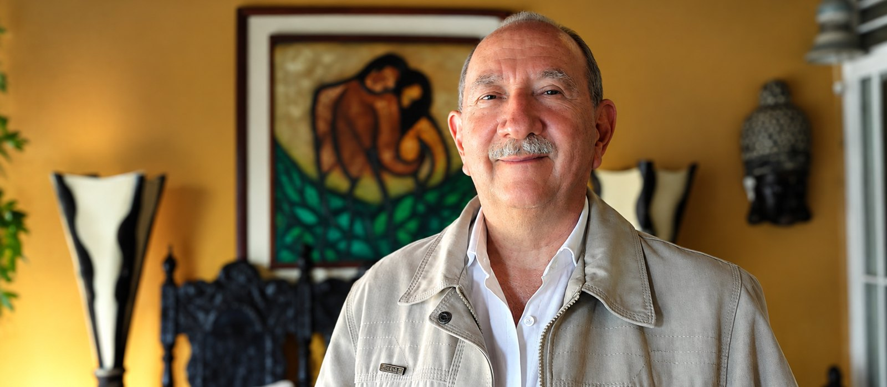

Nosotros
ARCA nace de un camino recorrido, no de una teoría aprendida.

Cómo llegué aquí
No llegué a este trabajo desde los libros. Llegué atravesando mis propias sombras.
Hubo un momento en el que tuve que mirar de frente lo que no funcionaba en mí, reconocer mis carencias y pedir ayuda. Ese fue el punto de quiebre. Lo que empezó como una búsqueda personal se convirtió después en un trampolín: descubrí que aquello por lo que había pasado podía transformarse en un propósito, el de acompañar a otros a salir de su propia oscuridad.
Por eso, cuando alguien se sienta frente a mí, no lo miro desde arriba. Lo miro desde un lugar que conozco.
Un Curso de Milagros
Un Curso de Milagros llegó a mi vida siendo muy joven. En 1996 conseguí el libro en español, y ese mismo año, aprovechando la visita de Rosa María Wynn, su traductora, a Venezuela, asistí a una conferencia con ella. Fue un antes y un después.
Desde entonces, el Curso ha marcado mi vida. No como una lectura, sino como una práctica: llevar su profundidad a la experiencia diaria, a lo que ocurre de verdad entre las personas.
Después de eso, las relaciones ya son otra cosa para mí.
Lo que me mueve
Hay algo que he comprobado una y otra vez, en mí y en quienes acompaño: siempre existe la posibilidad de ver de otra manera.
Los hechos suelen ser los mismos. Lo que cambia es el filtro con el que los miramos, ese que reduce la realidad a lo que ya esperábamos encontrar. Cuando ese filtro se amplía, aparece algo que antes no estaba a la vista, y la percepción se vuelve más amorosa.
Ese momento, el de alguien que de pronto ve distinto lo que llevaba años viendo igual, es lo que me mantiene en este trabajo.
De dónde vengo
Nací en San Cristóbal, estado Táchira, en Venezuela. Desde muy niño me atrajo la lectura. Recuerdo que ya a los once años leía libros de carácter metafísico, y profundizaba en el viaje del Kybalión, de Hermes Trismegisto.
Así fue como me adentré aún más en la lectura y encontré la magia de la literatura del poeta de la India, Gibrán Khalil Gibrán. Amé esa profundidad del espíritu impregnada en esas letras. Las amé tanto que no dejaba de obsequiar esos libros como regalo.
Sin saber cómo, fui conociendo las diferentes filosofías religiosas. Para mí ha sido un regalo del Universo haberme paseado y transitado por ellas, y cultivar en mí una espiritualidad definitivamente universal, sin dogmas ni separaciones.
Me casé y he vivido las relaciones desde lo humano: con subidas y bajadas, con tropiezos y aciertos, pero fundamentalmente con compromiso, seguramente como tú. Y he aprendido de ellas todo lo que se me ha permitido aprender.
Hay una frase que me acompaña siempre, una expresión del Zen:
«Servir y ser servido son pliegues de la misma vestidura.» Expresión Zen
Trato de hacerla digna de mí siempre.
Mi formación
Psicoterapeuta Gestáltico · Master Trainer en Programación Neurolingüística (PNL) · Constelaciones Sistémicas · Coach · Profesional en Rebirthing y Renacimiento · Tantra y Sexualidad Consciente · Especialista en Dinámica de Grupos · Mediación y Transformación del Conflicto · Pedagogía para la Paz · Maestro de Un Curso de Milagros
Cada herramienta llegó a mi vida por una necesidad concreta. No las colecciono: las uso según lo que cada persona y cada momento piden.
¿Te resuena algo de esto?
Si al leer sentiste que aquí hay algo para ti, ese suele ser el primer indicio.
Escríbeme por WhatsApp